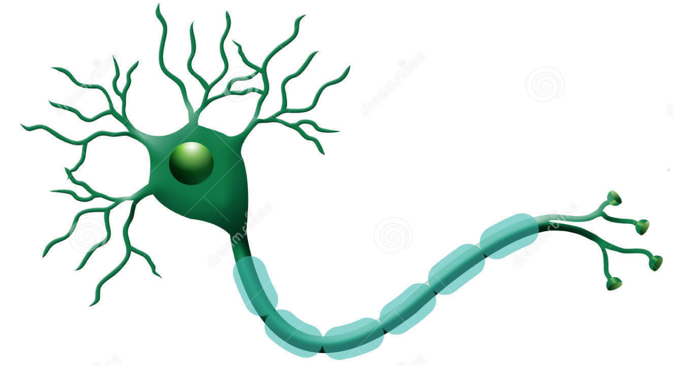
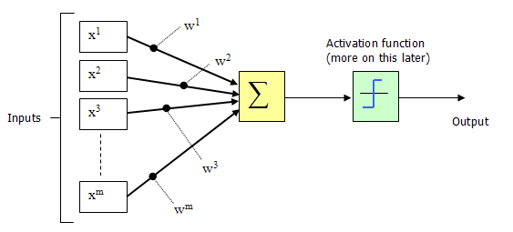
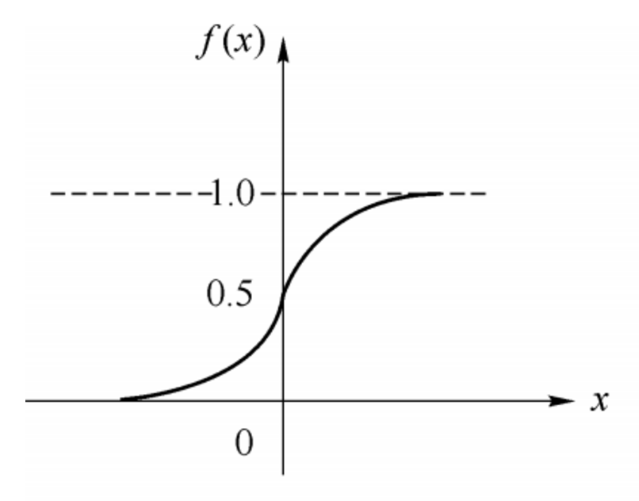
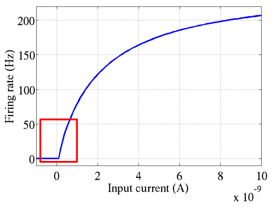
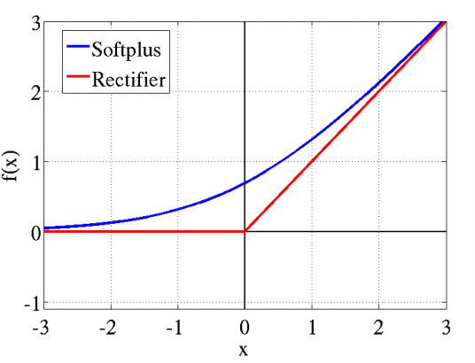
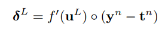
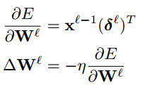
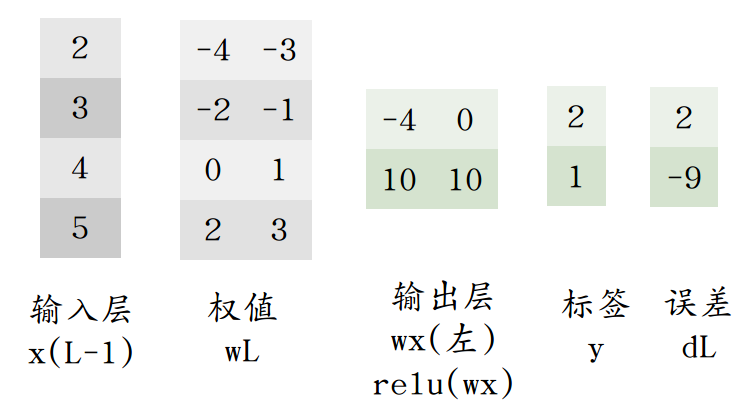

神经元是神经网络中最基本的结构，也可以说是神经网络的基本单元，它的设计灵感完全来源于生物学上神经元的信息传播机制。我们学过生物的同学都知道，神经元有两种状态：兴奋和抑制。一般情况下，大多数的神经元是处于抑制状态，但是一旦某个神经元收到刺激，导致它的电位超过一个阈值，那么这个神经元就会被激活，处于“兴奋”状态，进而向其他的神经元传播化学物质（其实就是信息）。
下图为生物学上的神经元结构示意图：

1943年，McCulloch和Pitts将上图的神经元结构用一种简单的模型进行了表示，构成了一种人工神经元模型，也就是我们现在经常用到的“M-P神经元模型”，如下图所示：

从上图M-P神经元模型可以看出，神经元的输出
$$y = f(\sum_{i=1}^{n}w_{i}x_{i} - \theta)$$
其中$\theta$为我们之前提到的神经元的激活阈值，函数$f(·)$也被称为是激活函数。如上图所示，函数$f(·)$可以用一个阶跃方程表示，大于阈值激活；否则则抑制。但是这样有点太粗暴，因为阶跃函数不光滑，不连续，不可导，因此我们更常用的方法是用sigmoid函数来表示函数函数$f(·)$。
sigmoid函数的表达式和分布图如下所示：

$$f(x) = \frac{1}{1+e^{-x}}$$
上一篇随笔中用到的感知机，是Rosenblatt于1957年提出，作为神经网络与支持向量机的基础。
1969年Minsky在《感知机》中指出感知机只能用于线性可分的模式分类问题和一阶谓词逻辑问题，不能用于线性不可分的模式分类问题和高阶谓词逻辑问题。
多层感知机模型理论上有求解线性不可分的能力，但是当时并没有有效的训练方法。
结合生物神经元，采用任一非线性激活函数，都能使单层感知机具有求解线性不可分的能力。
以下摘自Physcal的博文ReLu(Rectified Linear Units)激活函数。
传统神经网络中最常用的两个激活函数，Sigmoid系（Logistic-Sigmoid、Tanh-Sigmoid）被视为神经网络的核心所在。
从数学上来看，非线性的Sigmoid函数对中央区的信号增益较大，对两侧区的信号增益小，在信号的特征空间映射上，有很好的效果。
从神经科学上来看，中央区酷似神经元的兴奋态，两侧区酷似神经元的抑制态，因而在神经网络学习方面，可以将重点特征推向中央区，将非重点特征推向两侧区。
2001年，神经科学家Dayan、Abott从生物学角度，模拟出了脑神经元接受信号更精确的激活模型，该模型如左图所示：

这个模型对比Sigmoid系主要变化有三点：①单侧抑制 ②相对宽阔的兴奋边界 ③稀疏激活性（重点，可以看到红框里前端状态完全没有激活）
同年，Charles Dugas等人在做正数回归预测论文中偶然使用了Softplus函数，Softplus函数是Logistic-Sigmoid函数原函数。
Softplus(x)=log(1+ex)
按照论文的说法，一开始想要使用一个指数函数（天然正数）作为激活函数来回归，但是到后期梯度实在太大，难以训练，于是加了一个log来减缓上升趋势。
加了1是为了保证非负性。同年，Charles Dugas等人在NIPS会议论文中又调侃了一句，Softplus可以看作是强制非负校正函数max(0,x)平滑版本。
偶然的是，同是2001年，ML领域的Softplus/Rectifier激活函数与神经科学领域的提出脑神经元激活频率函数有神似的地方，这促成了新的激活函数的研究。
生物神经的稀疏激活性
在神经科学方面，除了新的激活频率函数之外，神经科学家还发现了神经元的稀疏激活性。
还是2001年，Attwell等人基于大脑能量消耗的观察学习上，推测神经元编码工作方式具有稀疏性和分布性。
2003年Lennie等人估测大脑同时被激活的神经元只有1~4%，进一步表明神经元工作的稀疏性。
从信号方面来看，即神经元同时只对输入信号的少部分选择性响应，大量信号被刻意的屏蔽了，这样可以提高学习的精度，更好更快地提取稀疏特征。
从这个角度来看，在经验规则的初始化W之后，传统的Sigmoid系函数同时近乎有一半的神经元被激活，这不符合神经科学的研究，而且会给深度网络训练带来巨大问题。
Softplus照顾到了新模型的前两点，却没有稀疏激活性。因而，校正函数max(0,x)成了近似符合该模型的最大赢家。
人类中枢神经系统中约含1000亿个神经元；人眼有约1.2亿个视杆细胞，600万~700万的视锥细胞 。
几乎所有的神经元都是相互联系在一起，组成一个复杂的网络。
如果没有激活机制，信号的传递和网络训练将消耗巨大。ReLU激活函数使得神经元低于阈值时处于沉默状态。
ReLU相对于Sigmoid一方面大大降低运算（生物运算也有成本）；另一方面在输入信号较强时，仍然能够保留信号之间的差别。
以下为《Notes on Convolutional Neural Networks》中的输出层反向传播公式。


下面函数是针对已经经过ReLU运算后求ReLU的导数。
def relu_prime(self,z): z[z>0]=1 return z
ReLU是在BP算法之后广泛使用的，假设没有BP算法，我们仍然可以根据生物神经网络推测权值的更新方式。
假设有以下网络，由于输出层第一个值为0，相当于w的左侧并未激活。
计算误差时用 f'(uL)*(yn-tn) 相当于不更新左侧权值。（ f'(uL) = [0,1] )

如下可见，添加一个ReLu激活函数，就能使感知机对XOR类问题收敛。
# coding:utf-8 import numpy as np def relu(z): return np.maximum(z, 0.0) def percepT(x, y, iter): # 感知机原始形式 n = np.shape(x)[1] m = len(x) theta = np.ones(n) alpha = 0.02 for it in range(iter): l = 0 print it for k in range(m): a=relu(x[k].dot(theta.T)) if (a) * y[k] < 0: l = 1 theta+=alpha *(y[k]-a)*x[k] if l == 0: break return theta N=3 a=range(2**N) x=[bin(i)[2:].zfill(N) for i in a] data=np.array([[int(i) for i in j ]for j in x]) y=np.array([i[0]*i[2] for i in data]) y[y==0]=-1 theta = percepT(data, np.array(y), 100) print theta # [-0.01272316 -0.1729134 -0.01583692] for i,j in zip(data,np.array(y)): print relu(i.dot(theta.T))* j>=0 """ True True True True True True True True """